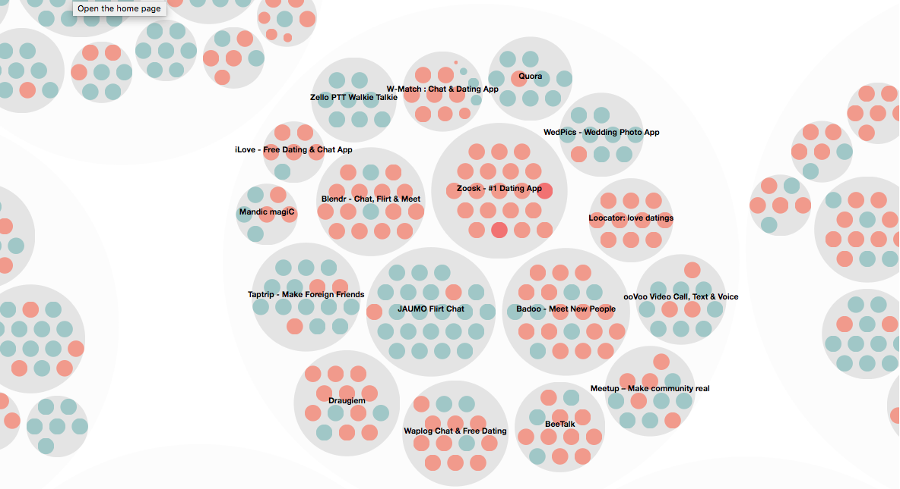

Welcome to my page! I'm a PhD student in Bioinformatics at Georgia Tech.
About Me
I'm a PhD student in Bioinformatics at Georgia Tech. I am being advised by Prof. Eberhard O. Voit and working in his Biological Systems Analysis group. My research interests lie in the fields of machine learning, multi-omics analysis and mathematical modeling of biological networks.
Previously
I did my Masters from Georgia Tech in Bioinformatics and my Bachelors from the Indian Institute of Technology, Kanpur in Biological Sciences and Bioengineering. During summer of 2015, I interned at Philips Research helping Westchester Medical Center(WMC) in identifying hospital infections.Before joining Georgia Tech, I worked as a software developer for eGain communications.
Publications
-
stringMLST: a fast k-mer based tool for multilocus sequence typing.
Gupta, A., King Jordan, Lavanya Rishishwar.
Bioinformatics 2017 (Citations: 5)
-
Metabolic Modeling Helps Interpret Transcriptomic changes during a Complex Disease.
Gupta, A., Tang Y, Garimalla S, the MaHPIC consortium, Galinski MR, Styczynski MP, Fonseca LL, Voit EO. Elsevier/BBA molecular basis of disease
Presentations
-
Model-based inferences of disease-related phenotypical alterations from changes in gene expression
Gupta, A., Fonseca LL, Voit EO.
Paper presented at ICMSB 2017, Raitenhaslach, Germany
Highlighted Projects
-
Information Visualization Project
An interactive visualization designed in d3/js to investigate and explore HIV/AIDS data for various countries over time. More information at www.prism.gatech.edu/~agupta399/InfoViz-Project/
-
Data and Visual Analytics Project
An interactive visualization to gain insights into reviews obtained from Google Play Store.

Click to view Resume
Activities & Interests
When I'm not researching I love swimming, skating, playing squash, traveling, going to beer fests, cooking, enjoying outdoor activities and dissecting gadgets. These days I have been playing with cryptocurrency as well.
Contact
anujg [at] gatech [dot] edu
Mailing
Room No. 2241
Engineered Biosystems Building (EBB)
Georgia Institute of Technology
50 Atlantic Drive
Atlanta, Georgia 30332